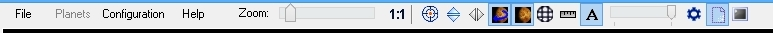
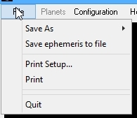
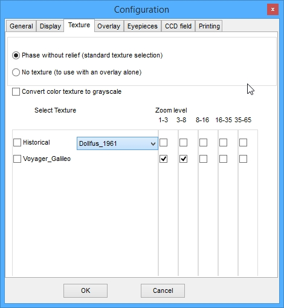
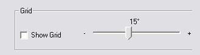

"Virtual Planets Atlas" (c)
Version Pro 1.0 / March 2015
Welcome to the "Virtual Planets Atlas" Pro 1.0
Since 10 years, as amateur astronomers, we continue to improve the "Virtual Moon Atlas" (VMA) to create a more and more useful and powerful software for Moon observers usable "on the field" and "on desktop". Now downloaded more than 850 000 times, it has becomed a worldwide "classic" astronomical software and has "re-boosted" amateur lunar observation.
Patrick Chevalley has created a powerful tool that can manage virtual globes, textures, overlays and databases. On the other side, Christian Legrand has enhanced his daily lunar and planetary datas search, and his management of databases, maps and surface features to adapt them to the software.
So, in 2013, we have thought to apply our VMA knowledges to a new "Virtual Planets Atlas" (VPA) since more and more topographic and scientific datas are available for telluric planets and satellites of our Solar System, datas brought back by an increasing efficient probes fleet sent by different spec agencies (USA / Russia / Europe / India...).
You are now using the first version of this "Virtual Planets Atlas" which presents you Mercury, Venus and Mars. Planets satellites will be added in the future versions.
This first version of VPA is available in four versions
- "Basic / Windows" : version usable on Windows platforms with medium hardware configurations and presenting total 3D globes with limited IAU databases.
- "Pro 1.0 / Windows" : version usable
on Windows platforms with powerful hardware configurations
and presenting "Basic" functions plus high definition
textures, extended databases, scientific overlays, double window display and full screen display.
- "Pro 1.0 / Linux" : version usable on Linux platforms with powerful hardware configurations and presenting "Basic" functions plus high definition textures, extended databases, scientific overlays, double window display and full screen display
- "Pro 1.0 / Mac OS" : version usable
on Mac OS platforms with powerful hardware configurations
and presenting "Basic" functions plus high definition
textures, extended databases, scientific overlays,
double window display and full screen display
These first four versions are freely downloadable from our new VPA Web site.
- The "Pro DVD" version that you can order from
VPA Web site if you don't have a quick Internet link or if you prefer a
convenient package or if you want to support our action. This version is usable with powerful hardware configurations.
The DVD contains one of the three Windows, Linux and Mac OS "Pro"
installers depending
As for VMA, a manual is necessary to discover all the software possibilities because it is very powerful. We would like you to read the documentation while you try to use the indicated functions.
The present manual describes only AVP Pro 1.0 version functions.
Thank you very much for your confidence that permits us to improve continuously the VMA since 10 years and now this new VPA !
Have a good use. We hope tou will appreciate this software and that you'll recommand it around you.
Christian Legrand and Patrick Chevalley
_____________________________________________________________________________________________________________________
THE VPA MAIN SCREEN
VPA on 16/9 screen with Mercury Messenger color texture (left) and Mercury Messenger Altitude overlay (right) & "Information" thumbnail
"VPA" screen appears in a "Microsoft
Windows style" window. The aspect is also the same on
MacOS. As usual, you can minimize or maximize the window, or
choose its size with the buttons in the title bar, on right.
You can open simultaneously two
map windows, permitting maps comparisons as on the picture above..
Main window presents:
- Menus and buttons bar
- Thumbnails "Information", "Ephemerisis", "Central meridian", "Tools", "Notes" and "Settings" and
the associated windows.
- Status Bar.

This bar presents menus to access different functions and buttons to quick launch of some other useful functions.

Traditional in all Windows softwares, this menu is used here save screen pictures, to setup printing, to launch Patrick Chevalley's freeware "Sky Charts" if it's installed on your computer, and to quit the atlas.
"Planet selection" FUNCTION
This function can open a list of the planets currently managed by VPA to choose the one to be studied..
"Save as" FUNCTION
This function permits you to save the "Map" window as a .jpg or a .bmp file
"Save ephemeris to file" FUNCTION
This function permits you to save the ephemerisis you need in an "ephem.csv" file. It opens a new window for choosing limit dates, the period, and the saving directory. The "Compute" button creates the file.
"Print setup" FUNCTION
This function permits you, with the use of the regular window selection, to choose your printer and to setup it.
"Print" FUNCTION
This function allows you to print the documents you chose in the printed documents (Map, ephemeris and / or information page).
"Sky chart" FUNCTION
This option is used to launch Patrick Chevalley's freeware "Sky Charts"
to determine planets position according to stars and horizon.
"Quit FUNCTION
You can leave the software using this option, closing all the open windows together.
THE "CONFIGURATION" MENU
This menu is used to adjust different parameters in VPA. It presents five thumbnails
"General" THUMBNAIL
Observatory coordinates
The software use coordinates of your observing site to display a real time planetary disk. To do this, you have to input the latitude and longitude of your observing site.
Input also the time shift from GMT.
"Date / Hour" frame
The "Date / Hour" frame is used to precise the hour and the time zone to use.
Filling the box "Use computer hour and time zone" so that VPA use the computer internal clock as a reference.
If you don't fill the box, you can specify your own time zone with the case displayed.
"Language" scrolling list
"Languages" scrolling list allows you to choose language used by the program and database. In this version, only French and English are available. You can also download from VPA Internet site, translations of words used in the menus. Translation pages indicate if database translations are also available.
"Display" THUMBNAIL
Display boxes
When clicking the "Show the phase" box, a penumbra zone is painted on the planetary globe. Its limit follows the terminator for the date and hour set by the user (See "Ephemerisis thumbnail"). You can set the penumbra properties representation (See "Setup thumbnail").
IAU planetary databases use various coordinates system. VPA use default "+ East 0...360°" system for its display (Others IAU systems are "translated" by the software). But you can choose three others coordinates system by checking the desired box if you want to see the original values.Longitude system
Colors
Clicking on the small colored squares allows you to choose colors
indicating point and formation name label displayed on map.
Labels and marks
Activating the corresponding boxes will make you display a point
showing the chosen formation and / or its official name
You can choose to center or to place on the right of the formation when using or not the "Center label on formation" box.
The button "Labels font" can be used to setup font type, size and style. The active font name is displayed right to the button.
The slider "Label density" can be used to setup the number of names displayed. You will certainly have several tests to determine the best compromise. These button and slider are also used to setup map printing because the printed map is exact clone of the map displayed in the screen window.
"Textures" THUMBNAIL
The two alternative radio buttons "Phase without relief" et "No texture" servent à choisir l'activation ou non de la texture. Le choix "Pas de texture" permet d'afficher une couche scientifique directement sur un globe vierge.
This thumbnail presents a matrix for selecting textures according to the
applied zoom level. This new function is a very useful way for choosing
the textures display.
The program will detect automatically which
textures are present (High Resolution or Very High Resolution) for each planet and will
permet access to the maximum zoom level available with them.
You can choose to keep the same texture for all zoom range or select a progressive change parallel to the zoom change.
You have just to select the wished radio button. There can only have
one texture choosen for a given zoom level.
If you don't want to see any texture, fill the "No texture" radio button to use with an overlay alone without any texture below.
We think that it's better to use textures with increasing resolutions
according to increasing zoom level.
There are presently maximum 3 resolution levels for the planets textures. The software
loads automatically the levels indicated according to the zoom applied
to the map.
Mercury « Topographic textures » choice
The following screen captures show you the Kuiper crater(62 km) area with maximum possible zooming. For this first version of VPA, only one texture is available :
- "Photographic Messenger" (JPL photographic mosaic realized
from Messenger probe pictures with a uniform lighting,)
Venus « Topographic textures » choice
The following screen captures show you the Cleopatra crater area with maximum possible zooming. For this first version of VPA, only one texture is available :
- "Photographic Magellan" (JPL photographic mosaic realized
from Magellan probe pictures with a uniform lighting),

Mars « Topographic textures » choice
The following screen captures show you the Olympus Mons caldeira area with maximum possible zooming. For this first version of VPA, only one texture is available :
- "Viking color" (JPL B&W photographic mosaic realized
from 2 Viking Orbiter probe pictures with a uniform lighting,
The box "Historical" gives access to a scrolling list of the historical textures used by VPA for each planet.
Important note:
These textures realized from old maps without any coordinates system
induce sometimes large shift between some formations and their labels.
More, as they are some maps drawn before space exploration probes, when
aplied on the whole planet globe, some parts are not drawn.
For Mercury :
"Arecibo" : Texture from a map established from Arecibo radiotelescope mapping with radar echoes and covering half of a planet.
"IAU 1972"
:
Texture from a map established by Audouin Dollfus (French astronomer)
on 1972 showing only albedo marks with latin names.
"Mariner 10 topography"

This texture has been built from Mariner 10 probe coverage of half Mercury during its 3 flybys. It has been assembled by Phil Stooke of the Lunar and Planetary Institute. We recommand to use this overlay without any texture below.
For Venus :
No
historical maps are included for Venus because of the thick cloud layer
that hides the topography to terrestrial observers. Only probes with
onboard radars can obtain reliefs datas that can be transformed in
"images".
For Mars :
"Schiaparelli 1884" : B
& W texture
from a map established by Schiaparelli (Italian astronomer) on 1884.
This map is the first presenting the famous "canalli" detected by this
observer. You will have to turn down the globe using the setup
thumbnail to turn up the original names on the map.
"Lowell 1895" : B & W texture from a map established on 1895 by Percival Lowell (US astronomer) presenting the famous "canalli" detected by P. Lowell at his private Flagstaff Observatory.
"Brenner 1904" : B & W texture from a map established on 1904 by Leo Brenner (Balkan astronomer) presenting the famous "canalli" he also detected.
"Mariner 6 topography"

This texture has been built from Mariner 6 historical first pictures of Mars, by Phil Stooke of the Lunar and Planetary Institute. We recommand to use this overlay without any texture below.
"Mariner 7 topography"

This texture has been built from Mariner 7 pictures of Mars, by Phil Stooke of the Lunar and Planetary Institute. We recommand to use this overlay without any texture below.
"Mariner 9 topography"

This texture has been built from Mariner 9 first high resolution complete coverage of Mars, by Phil Stooke of the Lunar and Planetary Institute. We recommand to use this overlay without any texture below.
"Hubble 2007"

This overlay has been obtained by Hubble Space Telescope on 2007. It's joined to see what is visible from the Earth, knowing that this view can varies a little from year to year. Colors and contrasts are rendered as "Natural". We recommand to use this overlay without any texture below.
New maps will be produced in next monthes. Please check our Web site to see announcements.
"Overlays" THUMBNAIL
VPA includes the ability to apply over the choosen texture or on a naked globe, an overlay which transparency can be setup so that the eventual texture continues to be seen through the overlay. These overlays are transposition of scientific datas coming mainly from the "Messenger", "Magellan", "Viking", "Mars Global Surveyor (MGS), "Mars Express" (ME) and "Mars Reconnaissance Orbiters" (MRO) missions, but they are also colors and geological full globe maps. This allows you to see, for each formation, its relation to most recent available scientific datas.
"Show overlay" Box
If you fill the "Show overlay" box, you display the overlay choosen with the scrolling list below over the choosen texture.
"Overlays" Scrolling list

If you activate the scrolling list, you can choose in the list the overlay
that you need. Here are the list of the overlays presently involved in
VPA. We will add on our site new overlays to download as soon as they
will be available. You'll find in this first VPA version :
- Colors and albedo overlays
- Geological overlay
- Elements concentration overlays
- Thermal emissions overlays
- Neutrons emissions overlays
Overlays presentation for each planet
MARS
"MGS Altitude" overlay


This overlay shows the Mars surface altitude. It's extracted
from MGS datas.
"MGS crustal magnetism" overlay


This overlay shows the magnetism involved in the crust of Mars. It's extracted
from datas released by MGS team. It's in nanoTesla, showing the extreme weakness of the Mars magnetism field.
"MGS Dust" overlay


This overlay has been obtained from datas of MGS Thermal Emission
Spectrometer (TES). It shows The distribution of dust on the surface of
Mars.
Orange, red, and white colors indicate areas that likely are dust
covered while blue and magenta areas likely are dust-free.
ME Ferric oxyde" overlay


This overlay shows the abundance of ferric oxyde on the
surface of Mars. This oxyde is mailnly responsible of the "red" color
of the planet. It's extracted from datas released by Mars Express team.
There is no value associated to the color scale
"ME Hydrated minerals sites" overlay

This overlay shows the sites where the Mars Express probe has detected hydrated minerals. There
is no value associated since it's only geographic locations.
"ME Olivine abundance" overlay


This overlay shows the sites where the Mars Express probe has detected a mineral called "Olivine".
Olivine and pyroxene tell the story of
volcanism, with differences in the chemical composition of the
solidified lavas representing the evolution of the temperature and
pressure inside the planet.
The colour scale indicates a transition in chemical composition of the olivine lavas from magnesium-rich (blue) to iron-rich (red).
"ME Pyroxene abundance" overlay


This overlay shows the sites where the Mars Express probe has detected a mineral called "Pyroxene".
Like olivine, pyroxene results from
volcanic processes that trace the evolution of the planet’s interior,
its chemical composition acting as a tracer of the evolution of the
temperature and pressure inside the planet.
The colour scale represents the abundance of pyroxene, from low (blue) to high (red).
"Mars Express Albedo" overlay

This overlay has been obtained by the Mars Express probe. It shows numerous strips because the images have been taken with various lighting angles. We recommand to use this overlay without any texture below.
There
is no value associated since it's onlytopographic pictures.
"MGS Color" overlay

This overlay has been obtained by MGS probe. Colors and contrast are enhanced. It's joined to see what is visible from the Earth, knowing that this view can varies a little from year to year. We recommand to use this overlay without any texture below.
"MGS Night temperature intermediate" overlay


This overlay has been obtained by MGS probe. It shows soil temperature during the night in the intermediate season. Remeber that 220 °K = -53°C and 150 °K = -123°C.
"MGS Vertical roughness" overlay

This overlay has been obtained by MGS probe. It shows the soil roughness derived from MOLA datas. Brighter shades denote rougher surface. Thus, general brightness denotes general roughness, and color hue denotes the nature of the scale dependence of roughness.
"MRO Geoid anomaly" overlay


This overlay has been obtained by MRO probe. It shows variations of the shape of Mars compared to a perfect sphere with the mean Mars density. It shows clearly that Tharsis Plateau is an upper part of Mars
"MRO Gravity anomaly" overlay


"MRO Geological revised" overlay


This overlay has been constructed from datas obtained by Viking and MRO. It shows all terrain kinds according to their ages.
"MO Water abundance" overlay


This overlay has been constructed from datas obtained by Mars Orbiter. It shows proportion of water ice present in the upper meter of the Martian surface.
The percentages are derived through stoichiometric calculations based on epithermal neutron fluxes. These fluxes were detected by the Neutron Spectrometer aboard the Mars Odysey probe
"Clouds" overlay

This overlay has been built from Magellan pictures of Venus. We recommand to use this overlay over the Magellan texture.
"Magellan Altitude" overlay

This overlay has been built from Magellan high resolution radar coverage of Venus. We recommand to use this overlay over the Magellan texture.
"Magellan Venera colors " overlay

This overlay has been built from Magellan high resolution radar coverage of Venus and colored with colours reported by soviet Venera probes that landed on the ground of Venus. Sure, this is purely artificial since radar images show first ground reflectivity to radar waves. We recommand to use this overlay over the Magellan texture.
"Magellan Shaded Relief N&B " overlay

This overlay has been built from Magellan high resolution radar coverage of Venus and from altitude datas permitting shadows addition. Sure, this is purely artificial since radar images show first ground reflectivity to radar waves. We recommand to use this overlay without any texture below.
"Magellan Microwave emissivity" overlay

This overlay has been realized from datas sent by the Magellan probe. It shows intensity of microwaves emission from the surface. We recommand to use this overlay without a texture below.
"Magellan Fresnel reflectivity" overlay

This overlay has been realized from datas sent by the Magellan probe. It shows intensity of soil reflectivity. We recommand to use this overlay without a texture below.
"Magellan Meter scale slope" overlay

This overlay has been realized from datas sent by the Magellan probe. It shows intensity and roughness of formations slopes. We recommand to use this overlay without a texture below.
"Magellan Geoid anomaly" overlay


This overlay is realized from Magellan probe instruments. It shows Venus shape variations compared to a perfect sphere. Red parts protudes while blue parts are depressions
"Magellan Free air gravity" overlay


This overlay is derived from Magellan probe instruments datas. It shows gravity variations because of underground structures in Venus soil.
"Magellan Bouger anomaly" overlay


This overlay is derived from Magellan probe instruments datas. It shows anomale gravity in Venus soil.
MERCURE
"Messenger color" overlay

This overlay has been built from Messenger probe pictures. It shows "natural" Mercury color. We recommand use of this overlay over the Messenger texture.
Couche "Messenger enhanced color"

This overlay has been built from Messenger probe pictures. It shows "enhanced" Mercury color to better show soil differences. We recommand use of this overlay over the Messenger texture..
"Messenger Altitude color" overlay

This overlay has been built from Messenger datas. As Messenger is on a high altitude over the South helispere, datas for this hemisphere have been produced by use of stereo MDIS images. Red is about 2 km above mean radius and purple about 3 km below mean radius. We recommand to use this overlay over the Messenger texture.
"Messenger Gravity" overlay

This overlay has been built from Messenger datas. It shows "free air" gravity anomaly on Mercury globe.As Messenger is on a high altitude over the South helispere, datas for this hemisphere have been produced by use of stereo MDIS images. Red is about 2 km above mean radius and purple about 3 km below mean radius. We recommand to use this overlay over the Messenger texture.
"Transparency" cursor
This cursor allows you to choose the transparency degree of the overlay applied above the texture. It doesn't operate on the texture. When the cursor is on the right, the overlay very visible. On left, the underlaying texture is almost invisible. Choose what degree you would apply to be able to see all the details together. (Example shown without underlaying texture).
"Grid " frame

When you move the slider from left to right, you decrease from 1 to 30° the grid density. The radio button « Show grid » displays or not a white grid with meridians and parallels on the planetary globe surface.
5° Grid

15° Grid

30° Grid

"Printing" THUMBNAIL

This thumbnail is used to setup map printing parameters.
"Setup" button
This button shows the standard Windows printing setup window.
Printing format
This area is used to choose printing margins width and change the
Description text width.
Printed documents
These boxes are used to select the documents that will be printed.
The printed map is that of the last window map. Topographic maps are black and white and geologic map are colored with color names in both types. Maybe you will have to change the Description text width to better see printed names.
"Ephemeris" text contains orbital, phase and libration information according to the last date and hour selected in the "Ephemeris" window.
"Description" text contains the information page of the last chosen formation on the map.
"Save map" frame
Displayed map can be printed on paper with white background around the lunar disk to speed up printing and save ink!
"Help" MENU

This menu brings up help tools to aid using the atlas.
"Help" choice
This choice displays the present manual in an independent window.
"About" choice
This choice shows the version of the program, and indicates how Christian Legrand and Patrick Chevalley divide their work in the creation and development of the AVP.
ZOOM CURSOR

Sliding this cursor from left to right increase zoom magnifying power of the map (See "Map window").
If cursor is on left, planet globe is entirely visible. Moving it to the
right increases zoom power (zooms in).
Depending on the resolution textures chosen in the settings (See "Settings thumbnail"), zoom will not show new details and map display can become fuzzy.
Display of labels and marks is a function of zoom factor and of labels density (See "labels and marks").
"1:1" BUTTON

Clicking on this button returns the map to the whole planet
globe display in the "Map window".
"Center" BUTTON

Clicking on this button will make the planet globe center displayed on the center of your screen when zoom is 1/1. It also centers the formation you have selected if zoom is on.
"North / South " BUTTON

If you click on this button, you immediatly invert the North - South in the "Map" window. It must be used with the "East - West" button below to change from naked eye view to Newtonian view.
"East / West " BUTTON
If you click on this button, you immediatly invert the East - West in the "Map" window. It must be used to change from naked eye view to refractor or catadioptric telescope view.
"Full globe / Rotation" button
When clicking on this button, you access to the most powerful function of VPA. If the button is Up, the map window shows you the side visible from the Earth with phase applied if you checked the boxes in the "Display" thumbnail of the "Configuration" menu.
But if you click down on this button, you go to "Full globe" mode and the map window displays a complete globe in three dimensions that you will be able to observe on all its faces.
"Grid" BUTTON
When clicking on this button, the grid choosen in the "Overlays" thumbnail of the "Configuration" menu is displayed on the luner globe. The space between parallels and meridians is that has been choosen in the thumbnail, from 1 to 30 °.
"Phase" BUTTON
If you click on this button, you display or remove the phase display on the planet globe of the "Map" window.
"Scale" BUTTON
When clicking on this button, a scale in angular dimension is displayed at the left botton of the map window.

Beware ! This scale indicates the "visual" angular size. It doesn't indicate the dimensions on the planet globe. For measuring distances on the globe, you must use the "distance measure" tool comprised in the "Tools" thumbnail.
"Labels" BUTTON
This button allows you to access the color choice window for map labels. Its use helps a lot to adapt quickly the labels colours to the map hues context, specially with scientific overlays use.
"2nd Window" BUTTON
If you click on this button, the "Map" window separates in two windows with equal width. This new window has the same properties as the main window. You obtain the "map" window, the "configuration" menu, the thumbnails and the buttons bar. To make active one of the 2 windows and access to its setup, click in it.
This new window opens with the same selected planet area as the first. So, you can easily compare the two windows and you can apply in this second window textures and overlays different from those of the first window.

Screen capture showing VPA one window with Mars "Viking color" texture and second window with "MRO altitude" overlay.
Beware ! This new function needs a powerful computer to be exploited with all its possibilities (If possible, processor frequency above 2 GHz, 512 Mb RAM and a graphic card supporting OpenGL with 64 Mb video RAM)
"Full Screen" BUTTON
If you click on this button, the thumbnails on the right, the title bar and the status bar all disappear, leaving only the map window or the double map window only on the screen.
Fabulous for large monitors, LCD and plasma TV, and videoprojector !!!
It's also a very useful tool for lectures about the planets !
A click on the left button selects a formation.
Pressing the left button and moving the mouse moves the map. The mouse wheel drives the zoom.
You have still access to the right click menu for managing the views.
"Map" window is on the left of general window. It shows planets maps according to the options selected (See "Map display "). This window can't be removed and is now independently sizable. Go with the pointer one the separation line with the right thumbnails. A new pointer appears. Stay with the mouse left button pushed and move it. The "Map" window width will be set.

Slide
bars appear according to the applied zoom factor (See "Zoom
cursor").
THE GLOBE MAP
It's regularly oriented in the same direction as the selected planet seen with naked eye or binoculars.
You can turn the map around its center to copy the eyepiece vision in
a Newtonian. You can display the map as in a mirror to see it as in a
refractor or a Schmidt-Cassegrain instrument (See "Tools"
thumbnail).
Mars map with inversion "<->"

"Full globe" and "Phased globe" maps


It permits to view a complete planet globe. If the option " Display phase " (See "Configuration menu ") is checked, the lighting of the globe is as the real one, for the date and hour choosen in the " Ephemerisis" thumbnail.
Map move
As a zoom factor is applied to map, you will be able to move into it.
In the "instrument view" mode, you can also "grab" the map
in left clicking on it and keeping left button clicked while moving the
mouse.
In the "Full globe" mode, you can also "grab" the globe with a mouse left click and while keeping left button click, you can turn the globe in the East or West direction when moving the mouse.
Mouse right click (All versions)
A right click on the mouse and a context menu appear with several choices.

Information : Sends you to the information database window.
Center : Centers the map on the selected formation.
Notes : Sends you to the "Notes" Thumbnail on the right side of the screen.
Neighbor : Sends you to the "Neighbor" Thumbnail on the right side of the screen.
Zoom : Can setup directly the zoom factor to 1/1, 1/2 or 1/4.
Distance : Activate the mode "Distance measurement" (Voir "Distance measurement")
Full screen : allows you to display only the "Map" window on
your monitor. Great with large LCD monitors or TV !
THE "INFORMATION" THUMBNAIL

SEARCH SCROLLING LIST

You can enter in this scrolling list some letters of the name of the
formation you want to find. It will accept "wildcards", so "*t"
will include in the scrolling list all formations names including "t",
for example.
"Find" BUTTON
Clicking on this button will display the formation selected in the
"Search" list.
"Find next" BUTTON
Clicking on this button will display localization and data of the next
formation in the "Search" scrolling list.
THE DATABASE WINDOW
The Database window is organized to display formation information extracted from the database. It has a slide bar on the right if not all the data can be displayed in the window.
Christian Legrand has presently realized 3 databases completed :
- Mercury IAU named formations (About 400 entries)
- Venus IAU named formations (About 2000 entries)
- Mars IAU named formations (About 1800 entries)
For each formation, available information is :
- the formation type.
- the PUN (Planetary Universal Number) an exclusive feature of VPA
- size datas
- official position
- descriptive name origin
- official 2012 IAU datas about this formation
These databases have been translated and adapted from IAU datas by a French man. Please forgive the rather poor English that has been used and language mistakes that you can find. You can report them to Christian Legrand. They will be corrected as soon as possible.
Warning : In such detailed work, the data will certainly contain some mistakes - mainly input mistakes. You can also report them to Christian Legrand so that he can correct the database.
The authors thank you in advance for your cooperation.
Informations of the VPA databases are copyrighted "(c) IAU / Christian Legrand" and can't be used outside of the software. For any other use, please contact the author.
Database detailed information presentation
OFFICIAL NAME :
This field presents the formation main name in Latin used officially
by the International Astronomical Union in capital letters.
PLANETARY UNIVERSAL NUMBER / P.U.N. © :
Here are the PUN description :
The PUN is composed by the assembling of the following characters chain :
PP : 2 letters corresponding to the planet :
- ME for Mercury
- VE for Venus
- MA for Mars
DT : 2 letters corresponding to the “Descriptor
term”
of IAU. These 2 letters are officially used by IAU. You can also find this list in the Glossary.
Here is the official list of IAU Descriptor Terms (Some of them are not used in the databases presently) :
|
|||||||||||||||||||||||||||||||||||||||||||||||||||||||||||||||||||||||||||||||||||||||||||||||||||||||||||||||
|
|
YYYYN or YYYYS
for the digital value of latitude in 1/100 ° deg. N and S indicate
North or South and are used to separate latitude and longitude to
clarify the characters chain. The last 2 digits on the right are those
of the 1/100 ° deg and are always present, even if they are zeros. The
first 2 left digits are absent if the latitude is 00 °.
ZZZZZ for the digital value of longitude in 1/100 °
deg counted toward East until 359,99°. The last 2 digits on the
right are those of the 1/100 ° deg and are always present, even if
they are zeros. The first 3 left digits are absent if the longitude is
000 °.
Here are two examples of PUN (PPDTYYYYNZZZZZ) :
- AA274S11422 : Crater located at 02,74° South and 114,22°
East
- RU8500N00 : Scarp which middle is situated about at 85,00° North et 0,00° East.
With all these features, the PUN is always the shorter possible and it's always easily "readable"
>>>> With the P.U.N. , you can find each lunar formation and this allows you to share observations of this formation with others colleages without any error.
FORMATION TYPE :
This field contains formation type according with International
Astronomical Union official list (See above) :
The four following fields contain data about formation dimensions. Indicated is data
provided by International Astronomical Union
Length :
This first field indicates the formation length in miles. For craters,
length is very often equal to width because it's the mean diameter.
Width :
This second field indicates the formation width in miles. For craters, length is very often equal to width because it's the mean diameter. When not available, this data is absent.
This two field are presented in the form : Length in km x Width in km
NAME ORIGIN :
Detailed name :
This field presents the real name of the person whose name has been given to the formation. When it also exists, a nickname is indicated..
For other formations than craters, the official name is first translated
in English, and then you can find the real name of the person whose
name has been given to the formation.
This field indicates also the activities of the person whose name has been given to the formation, according to IAU.
Here is the list of the main "works" you can find in the database:
- Agronomist
- Alchemist
- Admiral
- Anthropologist
- Archaeologist
- Archbishop
- Architect
- Artist
- Astronaut
- Astronomer
- Astrophysicist
- Author
- Aviator
- Banker
- Biologist
- Botanist
- Calif
- Cartographer
- Chemist
- Clockwork
- Consul
- Cosmographer
- Divinity
- Egyptologist
- Engineer
- Engraver
- Explorer
- Geodesist
- Geographer
- Geologist
- Geometer
- Geophysicist
- God
- Goddess
- Hero
- Historian
- Humanistic
- Hydrographer
- Inventor
- Jurist
- King
- Manufacturer
- Mathematician
- Meteorologist
- Mineralogist
- Missionary
- Mythological fame
- Naturalist
- Navigator
- Novelist
- Oceanographer
- Optician
- Paleontologist
- Pharmacist
- Philologist
- Philosopher
- Physicist
- Physiologist
- Poet
- Political man
- Priest
- Printer
- Professor
- Queen
- Scientist
- Sailor
- Saint
- Sismologist
- Sponsor
- Stateman
- Technician
- Theologian
- Writer
- Zoologist
The field indicates also the nationality attributed by IAU to the person whose name has been given to the formation. It can be the birth nationality. You can also find nationalities no longer in existence.
Here is the list of the main nationalities present in the database:
- American
- Arabian
- Australian
- Austrian
- Babylonian
- Belgian
- British
- Byzantine
- Brazilian
- Canadian
- Carthaginian
- Castillan
- Chinese
- Cretian
- Dalmatian
- Danish
- Dutch
- Egyptian
- English
- Finnish
- French
- Greek
- German
- Hungarian
- Indian
- Irish
- Italian
- Japanese
- Jewish
- Macedonian
- Mexican
- Norwegian
- Persian
- Polish
- Portuguese
- Roman
- Russian
- Scottish
- Soviet
- South African
- Spanish
- Swedish
- Swiss
- Czech
- Venetian
Birth year :
This field indicates the birth year of the person whose name has been
given to the formation given by IAU. If not found,
it is indicated " ?? ". Please note that for imaginary persons, there is no
birth year.
Death year :
This field indicates the year of death for the person whose name has
been given to the formation given by IAU. If not
found, it is indicated " ?? ". Please note that for imaginary persons, there
is no year of death.
Name author :
This field indicates, when it's known or supposed, the organization or person name that has given the name to the formation. As the VPA databases are built with IAU informations, you will find the date of IAU approuval in this field.
Official name given by IAU to the formation with all the additives on letters (Accents, tilde, etc...) as they have been given to the honored character.INTERNATIONAL ASTRONOMICAL UNION DATAS
IAU Feature Name :
It's official IAU name above without all the additives on letters (Accents, tilde, etc...)
so that they can be managed internationally by computers.
IAU Diameter
Approximate diameter or biggest dimension in kilometers.Latitude of the center of the formation. Positive numbers indicates that the formation is localized in northern hemisphere and negative numbers indicate that the formation is localized in the southern hemisphere.
Longitude of the center of the formation. On the Moon, positive numbers indicates longitudes towards East and negative numbers indicate longitudes towards West.
Latitude the most on North of the formation. Positive numbers indicates that the formation is localized in northern hemisphere and negative numbers indicate that the formation is localized in the southern hemisphere.
Latitude the most on South of the formation. Positive numbers indicates that the formation is localized in northern hemisphere and negative numbers indicate that the formation is localized in the southern hemisphere.
Longitude the most on the East of the formation. On the Moon, positive numbers indicates longitudes towards East and negative numbers indicate longitudes towards West.
Longitude the most on the West of the formation. On the Moon, positive numbers indicates longitudes towards East and negative numbers indicate longitudes towards West.
Coordinates system used for latitudes and longitudes. For the Moon, it's planetographic with east longitudes as positive and counted from 0 to -180° and from 0 to 180° from the meridian 0. It's ULCN 2005(Unified lunar coordinates network de 2005). Mean lunar sphere is considered withe a radius of 1737,4 km
Continent or great geographic divisin associated to the name.
Africa (AF)
Antarctica (AN)
Asia (AS)
Europe (EU)
North America (NA)
Oceania (OC)
South and Central America (SA)
Ethnic or cultural or nationalty associated to the name.
AFRICA
| Algeria | AL |
| Angola | AN |
| Bantu | BA |
| Benin | BE |
| Botswana | BT |
| Burkina Faso (Upper Volta) | BF |
| Burundi | BR |
| Bushman | BU |
| Bushongo | BH |
| Cameroon | CR |
| Canary Is. | CI |
| Dahomean | DH |
| Egypt | EG |
| Ethiopia | ET |
| Gabon | GB |
| Gambia | GA |
| Ghana | GH |
| Gold Coast | GC |
| Guinea | GU |
| Hottentot | HO |
| Ivory Coast | IC |
| Kenya | KY |
| Lesotho | LE |
| Liberia | LI |
| Libya | LB |
| Madagascar | MD |
| Malawi | MW |
| Mali | ML |
| Mande | MN |
| Mauritania | MU |
| Mauritius | MA |
| Mbundu | MB |
| Mende | ME |
| Morocco | MR |
| Mozambique | MZ |
| Namibia | NM |
| Niger | NG |
| Nigeria | NI |
| Pygmy | PY |
| Republic of Chad | CH |
| Republic of Seychelles | SY |
| Rwanda | RW |
| Semitic | SE |
| Senegal | SN |
| Sierra Leone | SL |
| Somalia | SO |
| South Africa | SA |
| Sudan | SU |
| Swaziland | SW |
| Tanzania | TA |
| Togo | TO |
| Tunisia | TN |
| Uganda | UG |
| Unknown | -- |
| Yao | YA |
| Zaire | ZA |
| Zambia | ZM |
| Zimbabwe | ZI |
| Zulu | ZU |
ASIA
| Afghanistan | AF |
| Akkadian (Accadian) | AK |
| Altai | AL |
| Arabian | AR |
| Armenian | AM |
| Assyrian | AY |
| Assyro-Babylonian | AB |
| Azerbaijan | AZ |
| Babylon | BY |
| Bangladesh | BA |
| Bhutan | BH |
| Buriat | BR |
| Burma | BU |
| Cambodia | CM |
| China | CH |
| Chukchi | CU |
| Elamite | EL |
| Evenki | EV |
| Georgia | GE |
| Hebrew | HE |
| Hindu | HI |
| India | IN |
| Indonesia | ID |
| Iran | IR |
| Iraq | IQ |
| Israel | IS |
| Itelmen | IT |
| Japan | JA |
| Jewish | JW |
| Jordan | JO |
| Kashmir | KA |
| Kazakhstan | KZ |
| Ket | KT |
| Korea | KR |
| Kuwait | KU |
| Kyrgyzstan | KY |
| Laos | LA |
| Lebanon | LE |
| Malaysia | MA |
| Mansi | MS |
| Mesopotamian | ME |
| Minyong | MY |
| Mongolia | MO |
| Monguor | MG |
| Nanai | NA |
| Neghidhian | NG |
| Nepal | NE |
| Nganasan | NS |
| Oman | OM |
| Ostyak | OS |
| Pakistan | PK |
| Persian | PE |
| Philippines | PH |
| Phoenician | PO |
| Sanskrit | SA |
| Saudi Arabia | SB |
| Scythian | SC |
| Semitic | SE |
| Siberia | SI |
| Sri Lanka | SR |
| Sumerian | SU |
| Syria | SY |
| Taiwan | TW |
| Tajik | TJ |
| Thailand | TH |
| Tibet | TB |
| Tungu | TN |
| Turkey | TU |
| Turkmenistan | TK |
| Tuva | TV |
| Ulci | UL |
| Unknown | -- |
| Urartu | UR |
| Uzbekistan | UZ |
| Vietnam | VT |
| Yakutian | YK |
| Yemen | YE |
EUROPA
| Albania | AL |
| Andorra | AN |
| Austria | AS |
| Bashkir | BS |
| Belarus | BL |
| Belgium | BE |
| Bosnia-Herzegovina | BH |
| Bulgaria | BU |
| Byzantine | BZ |
| Caucasus | CC |
| Celtic | CE |
| Chuvash | CH |
| Croatia | CR |
| Cyprus | CY |
| Czechoslovakia | CZ |
| Denmark | DE |
| England | EN |
| Eskimo (Greenland) | EK |
| Estonia | ES |
| Finland | FI |
| Flemish | FL |
| France | FR |
| Germany | GE |
| Great Britain | GB |
| Greek | GR |
| Greenland | GL |
| Gypsy | GY |
| Hungary | HU |
| Iceland | IC |
| Ireland | IR |
| Italy | IT |
| Kalmyk | KL |
| Karelia | KA |
| Komi | KO |
| Lapp | LP |
| Latin | LA |
| Latvia | LV |
| Liechtenstein | LE |
| Lithuania | LI |
| Luxembourg | LU |
| Macedonian | MA |
| Malta | ML |
| Mari | MR |
| Moldova | MD |
| Mordvinian | MO |
| Netherlands (Dutch) | DU |
| Norse | NS |
| Norway | NO |
| Oscan | OS |
| Ostrogoth | OG |
| Poland | PO |
| Portugal | PG |
| Roman | RM |
| Romania (Rumania) | RO |
| Russia | RU |
| Scandinavian | SD |
| Scotland | SC |
| Scythia | SY |
| Slavic | SL |
| Slovakia | SV |
| Slovenia | SI |
| Soviet | SO |
| Spain | SP |
| Sweden | SW |
| Switzerland | SZ |
| Tartar | TT |
| Teutonic | TU |
| Udmurtian | UD |
| Ukraine | UK |
| Unknown | -- |
| Wales | WA |
| Yugoslavia | YU |
NORTH AMERICA
| Aleutian | AU |
| Algonquin | AL |
| American | AM |
| Arikara | AR |
| Blackfoot | BL |
| Canada | CA |
| Cherokee | CE |
| Cheyenne | CY |
| Chickasaw | CH |
| Chinook | CI |
| Choktaw | CO |
| Chumash | CU |
| Creek | CR |
| Dakota | DA |
| Dominica | DO |
| Eskimo | ES |
| Hopi | HO |
| Iroquois | IR |
| Klamath | KL |
| Lakota | LA |
| Mandan | MA |
| Mexico | ME |
| Navajo | NV |
| Osage | OS |
| Pawnee | PW |
| Pequot | PE |
| Potawatomi | PO |
| Pueblo | PU |
| Salish | SA |
| Seneca | SE |
| Shoshoni | SH |
| Sioux | SX |
| Tlingit | TL |
| United States | US |
| Unknown | -- |
| Zuni | ZU |
OCEANIA
| Australia | AU |
| Caroline Is. | CI |
| Cook Islands | CO |
| Fiji | FJ |
| Guam | GM |
| Hawaii | HA |
| Marquesas Islands | MA |
| Marshall Is. | MI |
| Melanesia | ME |
| Micronesia | MC |
| Nauru | NA |
| New Britain | NB |
| New Guinea | GU |
| New Zealand | NZ |
| Papua New Guinea | PN |
| Polynesia | PO |
| Republic of Palau | PA |
| Samoa | SA |
| Society Is. | SI |
| Toamotu | TU |
| Tonga | TO |
| Unknown | -- |
| Vanuatu | VA |
CENTRAL AND SOUTH AMERICA
| Argentina | AR |
| Auracanian | AC |
| Aztec | AZ |
| Barbados | BB |
| Bolivia | BO |
| Bororo | RR |
| Brazil | BR |
| Chile | CH |
| Chimalateco | CI |
| Colombia | CO |
| Costa Rica | CR |
| Cuba | CU |
| Dominican Republic | DR |
| Ecuador | EC |
| El Salvador | ES |
| Falkland Islands | FI |
| French Guiana | FG |
| Grenada | GR |
| Guatemala | GU |
| Guyana | GY |
| Haiti | HA |
| Honduras | HO |
| Inca | IN |
| Jamaica | JM |
| Mayan | MY |
| Nahuatl | NA |
| Netherland (Dutch) Antilles | DA |
| Nicaragua | NI |
| Panama | PM |
| Paraguay | PA |
| Peru | PE |
| Puerto Rico | PR |
| Suriname | SU |
| Unknown | -- |
| Uruguay | UR |
| Venezuela | VE |
| Virgin Islands | VI |
Code in two letters of the IAU descriptor term (cf Lunar Universal Number above)
Specific IAU quadrant where is localized the formation center.
Approval level of the formation in 2011.
| 1 | Proposed (not currently used) | |
| 2 | Task Group approval (not currently used) | |
| 3 | WGPSN approval (not currently used) | |
| 4 | Executive Committee approval (not currently used) | |
| 5 | Adopted by IAU | |
| 6 | Dropped, no longer in use | |
| 7 | Never approved by the IAU |
Date when the name has been approved by IAU. Complete dates begin at half september 2006 and are recorded as (YYYY-MM-DD).
Short explanation of the formation name.

When you click on the "Ephemeris" thumbnail, the right frame window fills
with planet position datas: This position can be set entering
some parameters. You can also continuously manage time with the "tape recorder" buttons.
DATE AND TIME INPUT
Observation date and hour can be set with upper case, either clicking
and entering them directly or using the arrows. The "Compute"
button displays the map with the choosen date and hour.

The "Now" button can show directly the choosen planet aspect at the current time. Date and hour used are those of your operating system. Verify if it's on time. This setting is very useful when using the software "in the field".
The "Compute" button display the choosen planet as it looks like to the date and hour selected with the previous paragraph.
The "Oh" button shows you the choosen planet at 0 h on the date
selected with the previous paragraph.
"VIDEO RECORDER" BUTTONS
"Video recorder" buttons are a powerful provision meant
for real planet aspect changes. They are very useful when using Open gL
3D display with the "Phase" option activated.
">>" and "<<" buttons can increase or decrease date with
a one day rate. ">" and "<" buttons increase or decrease hour with
a one hour rate.
These buttons allow you to observe the phase evolution
during time.
The right frame window contains the following information on Moon position
:
Choosen planet right ascension
Choosen planet declination
Distance :
Apparent diameter:
Phase angle
Illumination percentage
Solar inclination
Choosen planet rise hour
Choosen planet meridian transit hour
Choosen planet set hour
Choosen planet rise azimuth
Choosen planet transir altitude
Choosen planet set azimuth
The following informations are not displayed if you check the box "Geocentric
coordinates" in the "General" thumbnail of the
"Configuration" menu.
Choosen planet rise hour
Choosen planet meridian transit hour
Choosen planet set hour
Choosen planet rise azimuth
Choosen planet set azimuth
THE "CENTRAL MERIDIAN" THUMBNAIL

This thumbnail allows you to see the visible formations along the planet central meridian, choosen for the date and hour that have been precised in the "Ephemerisis" thumbnail. More, you can sort them using one criteria.
The "Sort" buttons allow you to choose the sorting criteria :
- Name :
Activating this button will sort the formations in alphabetical order.
- Latitude :
Activating this button will sort the formations in decreasing latitude from North to South.
- Minimal length :
If you fill this field, or selecting a dimension in the scrolling list, you limit the list with formations larger than the indicated value.
In this thumbnail, you can enter your personal notes on each formation. These notes are stored in a dedicated database.
The "Update" button must be pressed to record any change in the database.
THE "SETTINGS" THUMBNAIL

This thumbnail will allow you to choose the special settings for the display.
"PENUMBRA" CURSOR
This cursor sets the transparence of the "night" part of the planet globe when the box " when the "Show the phase" box in the "Display" thumbnail of the "Configuration" menu is activated. We think it's better to choose an intermediate setting to give an "Ashen Light" appearance to the rest of the globe. Cursor at left gives a night part completely black. But if you want to use VPA as an atlas, put the the cursor to right or uncheck the "Show the phase" box in the "Display" thumbnail of the "Configuration" menu
"DIFFUSE" CURSOR
This cursor sets the general quality of the map.
"SPECULAR" CURSOR
This cursor manages the transition zone between light and shadow width.
At left, it's maximal but not too realist.
"SMOOTHNESS" CURSOR
This cursor manages the 3D sphere precision when textures is applied.
At left, it's not a sphere but a rough polyedra with visible flat faces.
Moving the cursor at right increases the faces number, but this needs
a more powerful computer.
An image number indicator (fps) shows you the performance of your configuration.
Don't go under 4 fps to keep a sufficiently speedy display when handling
the map.
But, going to a better spherical resolution also slightly increases the
formations place precision on the map.
"OPTIONS VALID AT NEXT STARTUP" FRAME
As indicated , changing one of the following options will be taken account only at next computer startup.
"Force texture compression" :
Normally, this option must be checked to avoid display flickering. Removing
it can nevertheless improve performances with some graphic cards types.
"Anti Alias" :
Try this option to remove scale effects on map window. Beware, only some
graphic cards can handle this option.
THE "TOOLS" THUMBNAIL

"Tools" thumbnail in "Telescope"
mode
"Normal mode / Measure the distance" BUTTON
This button changes cursor action mode on the map. It's a toggle button. Its caption changes to allow you to go back to the other mode.
"Normal mode"
When in normal mode, the cursor is like a round bull's eye and is used to select formations.
"Distance measure"


When in this second mode, the cursor changes its
shape and is used for measuring distances between lunar formations or
for measuring dimensions of a selected formation. Here, you see an
example about Caloris Basin diameter on Mercury (The red line is 468,7
km long.
Put the cursor on the beginning of the distance to measure. Click with the left button and hold it down. Move the mouse. A color line originating at the first point appears. You just have to go to the end of the distance you want to measure by moving the mouse. Once there, release the mouse button. The line stays visible.
Up in the "Tools" panel, a box indicates the length of the drawn line in km and in arc minutes. Spherical shape of the planet in included in the computing method. So, near the planet limb, two perpendiculars lines with the same apparent length will indicate different dimensions.
You can turn the map with the "West" and "East" buttons to obtain the view seen in your telescope
You can do the same thinh with the "North" and "South" buttons.
If you check this case, the planet will be seen as if you put a mirror on its side. It's like what you see in refractors or Schmidt Cassegrain telescopes.
- "Dobson" IMAGE
If you check the "Local zenith on
top" case, the planet will be oriented as if you were looking at it
with an altazimutal instrument
THE STATUS BAR

"COORDINATES" DISPLAYS
Latitude and longitude of the pointer on the planet globe are displayed on the left side of the status bar. Don't mix them with your observing site coordinates
"DATE AND HOUR" DISPLAY
The date and time in the status bar corresponds to the time selected in the "Ephemeris" tab. It should not be confused with the date and time of your system!!!
"FIELD" DISPLAY
It indicates the choosen planet. The field value corresponds to the visual apparent field of the map
window selected.
The zoom factor value is indicated.
The level and the nature of the texture are given.
The coordinates system is listed.
END OF MANUAL OF THE VPA PRO 1.0
The authors thank in advance users to inform them ebout every mistake encountered in this manual in using the VPA Internet site forum.
Copyright Christian Legrand
&